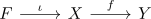

homotopy fiber sequence
Definition
A homotopy fibre sequence is a sequence of composable continuous maps

together with a nullhomotopy of $fi$ to a constant map with value $y$ such that the induced map
\begin{align*}
F \rightarrow \mathrm{hofib}_y(f)
\end{align*}
is a weak homotopy equivalence
see: